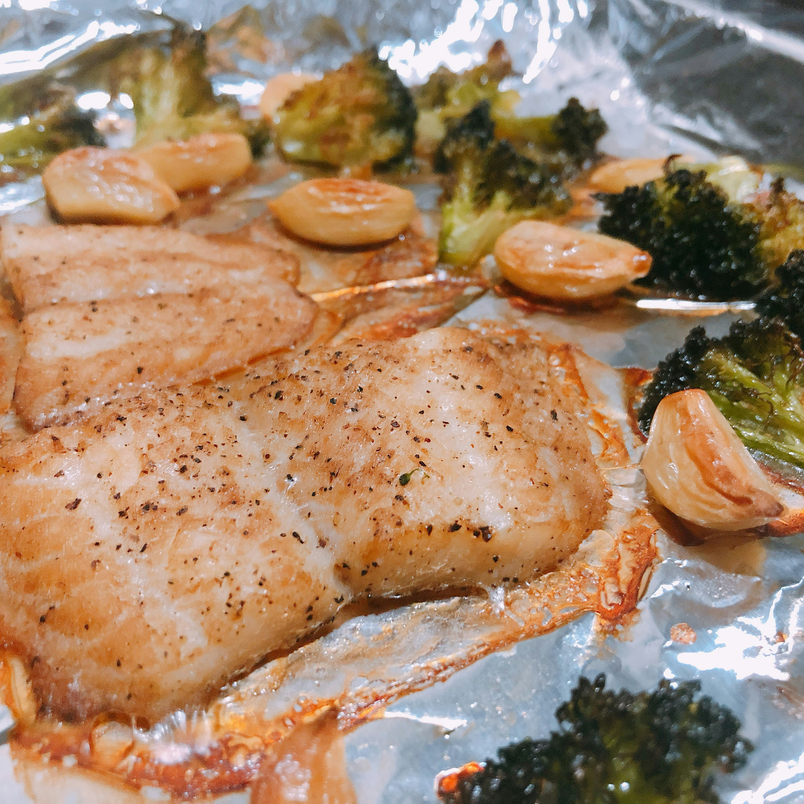

Baked Chilean Sea Bass

Photo by
Na Yue on Unsplash
Description
This recipe is a delightfully fresh take on the classic Chilean Sea Bass recipe with a beurre
blanc sauce that adds the right amount of zest.
I've found this recipe adds a touch of class that impresses dinner guests.
Ingredients
For the fish
- Olive oil for the pan
- 4 Chilean sea bass fillets
- Kosher salt
- Pepper
- Creole seasoning
For the beurre blanc
- Dry white wine
- White wine vinegar
- Minced shallots
- Lemon zest
- Heavy cream
- Cold butter
Steps
- Preheat the oven to 425°F
- Place the fillet on foil lined baking sheet
- Sprinkle fillets with salt, pepper, and Creole seasoning
- Bake the fillets for a short time
- While the fish is baking, prepare the beurre blanc
- Combine the wine, vinegar, shallots
- Simmer until reduced
- Add zest and heavy cream
- Turn the heat low and whisk in the butter
- Pour over fish and serve
Home